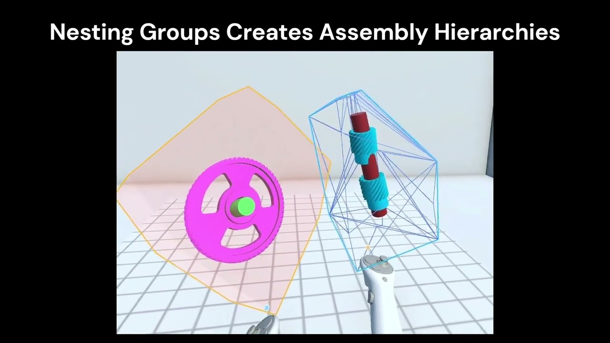

IEEE ISMAR 2026 · 2026
Delegate the Details: Flexible Assembly Constraint Authoring for Collaborative XR

BibTeX
@inproceedings{yang2026delegatedetails,
title={Delegate the Details: Flexible Assembly Constraint Authoring for Collaborative XR},
author={Yang, Ben and He, Xichen and Zou, Charlie and Liu, Jen-Shuo and Tversky, Barbara and Feiner, Steven},
booktitle={2026 IEEE International Symposium on Mixed and Augmented Reality (ISMAR)},
year={2026}
}